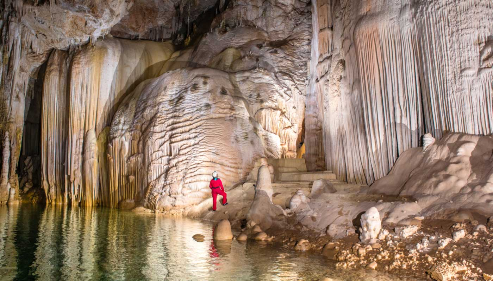
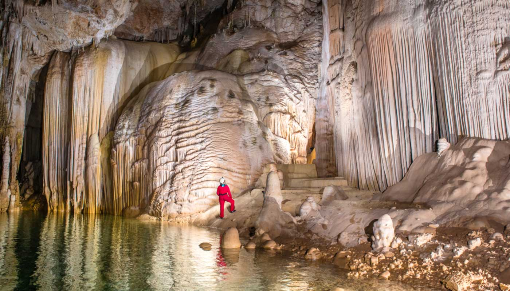
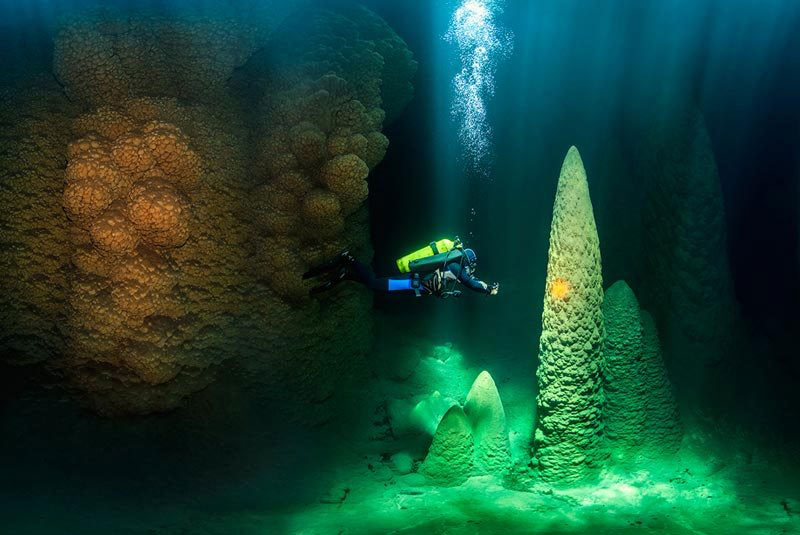
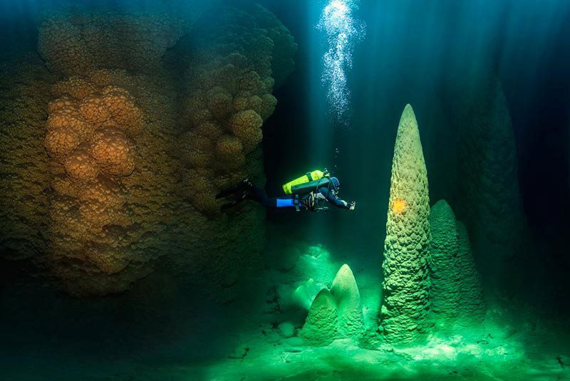

↪ O Abismo Anhumas tem uma beleza única: uma caverna parcialmente submersa, um lago cristalino e uma floresta de cones de calcário - apresentando os maiores cones já registrados na literatura mundial. É o mais puro estado da natureza.
↪ Ao visitar este incrível cenário, você compreende na prática a grandeza da natureza e do tempo e a nossa fragilidade humana frente a tudo isso.
↪ Tirar belíssimas fotos do Abismo Anhumas; Curtir o visual da plataforma flutuante; Fazer uma visita guiada de bote inflável, e conhecer mais sobre a caverna e sua formação; Experimentar a flutuação com a roupa de Neoprene; Mergulhar no lago de águas cristalinas.
 



 
